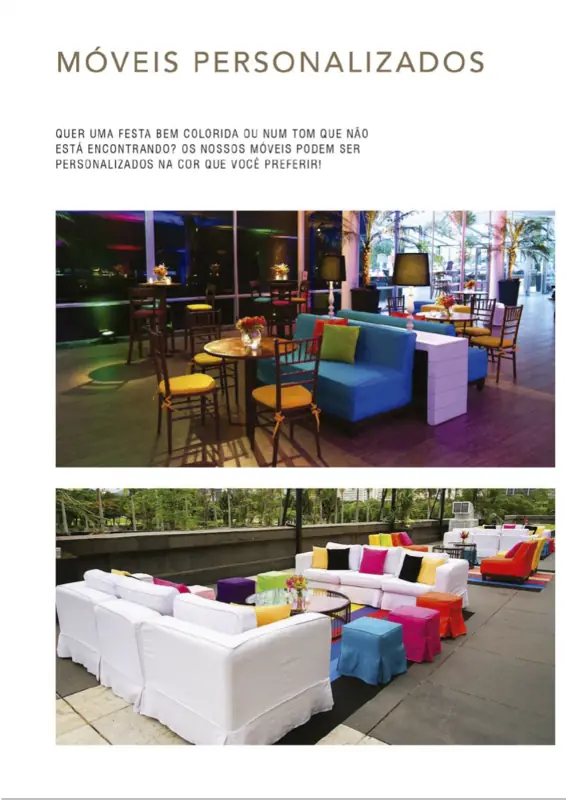

Linha
Mesas, cadeiras, sofás, poltronas, bares e acessórios para locação. Busque pelo nome, código, cor ou medida, ou navegue pelas categorias.

Não encontrou o tom que procura? Os móveis podem ser personalizados na cor que você preferir. Sofás forrados devem ser solicitados com 30 dias de antecedência.